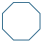

معالم
معالم
المشروع الإصلاحي
معالم منهجية ينبغي أن تكون حاضرة في مختلف البرامج التعليمية والمشاريع الإصلاحية
24
24 معلمًا
معالم في البناء
معالم في البناء
تعزيز مكانة مرجعية الوحي، وتعزيز شموليتها، والربط بينها وبين احتياجات المصلح السلوكية والإصلاحية

01
التنشئة على فقه المحكمات والأولويات، والتربية على مركزة المركزيات، وعلى إعطاء كل حكم شرعي حقَّه وقدره الموافق للوحي
02
التربية على مركزية هدي الأنبياء الإصلاحي، وعلى العناية بسبيلهم، والاهتمام الخاص بالسيرة النبوية المحمدية
03
تلقي القرآن على منهاج النبوة، والتنشئة على قاعدة الاستهداء به وتدبره والعمل به، وتقديم ذلك على مجرد الحفظ
04
التنشئة على مركزية التزكية والإيمان، وجعلها أساسًا في البناء على طول الطريق
05
التنشئة على العلم بأصول الدين والربط بالتراث الإسلامي، والتنشئة على علومه بمنهجية مُحْكمَة تُراعي المقاصد الغائية والجزئية
06
التنشئة على مركزية العمل وأنه المقصود من العلم، وأن المصلح يُبنى ليعمل لا ليقعد
07
التربية على مركزية جمع الكلمة وعدم التفرق
08
الربط الدائم بالواقع، والتنشئة على فهمه وإدراكه، ومواكبة المشكلات الكبرى والتحديات المحيطة بالأمة الإسلامية
09
التربية على مفهوم الارتباط بالأمة وتقديم الولاء لها وللمؤمنين على الولاء الوطني أو الحزبي أو المذهبي
10
الاعتزاز بالهوية الإسلامية، والاعتزاز الفكري، والوقاية من الشبهات والإشكالات الفكرية المعاصرة
11
العناية بكشف سبيل المجرمين، والتربية على مركزية التدافع بين الحق والباطل، وتجديد الوعي الدائم بواقع المحاربين للأمة من داخلها وخارجها
12
التنشئة على العناية بالسنن الإلهية والعناية بها
13
الغرس الدائم لروح الأمل والتفاؤل، وفتح الآفاق أمام المصلح، وعدم الاستسلام لليأس
14
التربية على العناية الدائمة بالمقاصد في مختلف القضايا، والتخفيف من التعصب للوسائل مع التربية على الأخذ بالأسباب
15
التأصيل والمنهجية والمتانة العلمية
16
التجديد المنضبط عند اندراس معالم الدين والإصلاح وآثار النبوة
17
الوسطية والاعتدال ونبذ الغلو
18
التأسيس الشمولي للشخصية المسلمة الربانية
19
التربية الشمولية الجامعة بين الإيمان والعلم والوعي والمنهج الإصلاحي
20
عدم الوصاية الزائدة على المتربين والمصلحين، وفتح آفاق العمل والتجربة أمامهم
21
عدم الاكتفاء بالبناء النظري، والحرص على البناء العملي الذي يتضمن مبدأ (التدريب العطائي)
22
الربانية في بناء المصلحين
23
التربية على العمل والجدية والعزيمة وعدم استعجال الثمرة
24

عرض جميع النقاط (24)
22
22 معلمًا
معالم في العطاء
معالم في العطاء
تقديم واجب صناعة المصلحين في وضع الأمة الراهن
01
الرفق والرحمة والمرونة ونبذ التكلف
02
العناية بالشباب والأجيال الصاعدة
03
العناية بالأدوات الحديثة والأساليب المؤثرة والحجة والبرهان
04
استثمار طاقات شباب الأمة
05
العناية بدور المرأة الإصلاحي
06
إحياء الهمم والعزائم والتسامي عن الدون
07
عدم استعجال الثمرات الإصلاحية
08
مبدأ التكامل الإصلاحي
09
العناية بالثغور، وتقديم العمل على حسب أشد الثغور إشكالًا
10
الجمع في العمل بين دائرتين: نشر الحق وقمع الباطل، وعدم الاكتفاء بأحدهما دون الآخر
11
الحرص الدائم على الاستهداء بالله في الطريق الإصلاحي ودوام التوكل
12
عدم الانقطاع عن البناء أثناء العطاء
13
الاستعداد البنائي التخصصي في الثغور التدافعية المتقدمة
14
التركيز على المقاصد الرسالية العظمى في العمل، وعدم الانحراف عنها بسبب القواطع والخلافات (مبدأ التجرد الإصلاحي)
15
البناء على الثمرات والاستفادة من النتائج السابقة لبناء مشاريع لاحقة
16
النزاهة والورع في المكاسب الشخصية في الطريق الإصلاحي
17
المحافظة على دوام التزكية والتعبد وعدم الانقطاع عنها بسبب العمل
18
موافقة السنن الإلهية
19
العناية بتحقيق الثقافة المعيارية للمصلحين أثناء العمل
20
العمل بمقتضى الأمر الشرعي في الإصلاح، ومراعاة طبيعة كل مرحلة
21
العدل في مختلف الدوائر الإصلاحية، وخاصةً مع المصلحين
22
عرض جميع النقاط (22)
العودة إلى
المشروع الإصلاحي